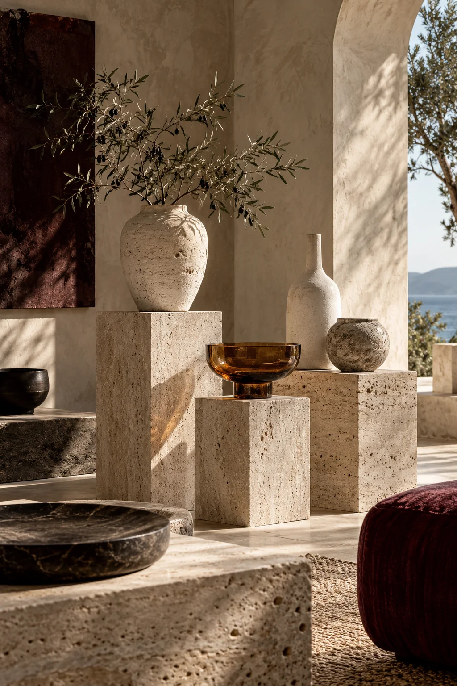
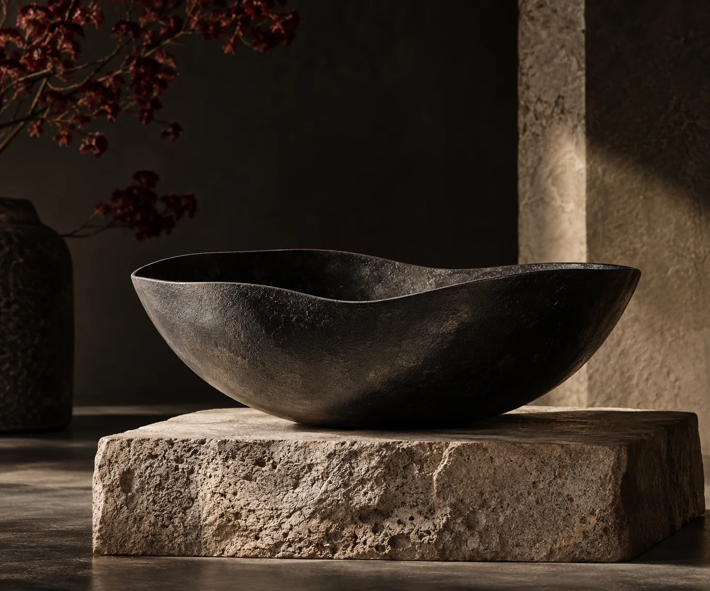
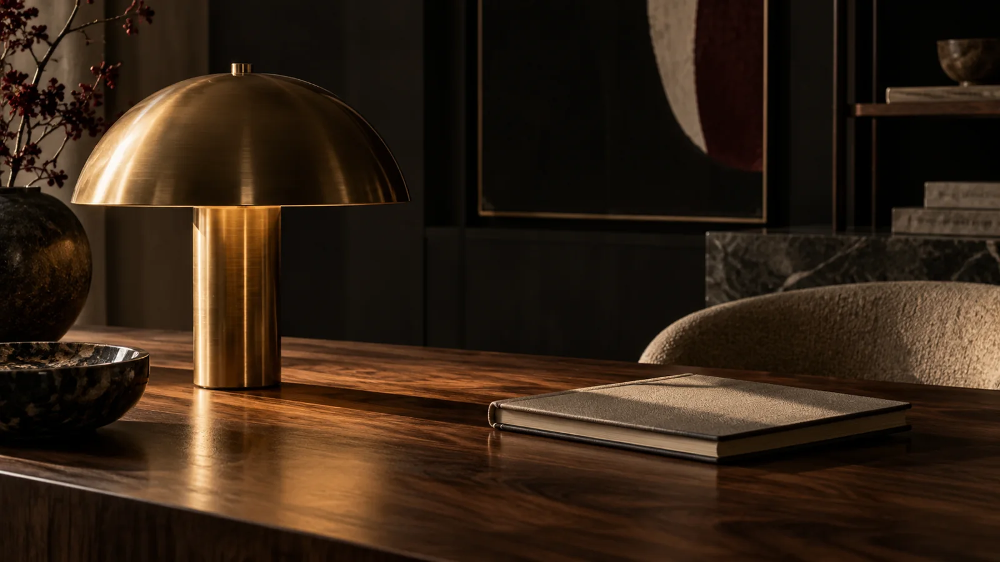

LES COLLECTIONS
Quatre univers.
Un même regard.
Une promenade entre le minéral, l’ombre, le quotidien et la lumière.

NOIRÉ — ÉTUDE DE MATIÈRE01 / COLLECTION MATIÈRE
La forme
à l’état brut.
Travertin, céramique, bois et textiles. Une palette ancrée dans la terre, des volumes qui se répondent.
Voir les objets01 / LES PIÈCES
L’esprit Matière.

NOIRÉ — ÉTUDE DE MATIÈRE02 / COLLECTION NOCTURNE
L’ombre
a ses nuances.
Noir profond, reflets retenus et silhouettes franches. Une sélection qui trouve sa force dans la simplicité.
Voir les objets02 / LES PIÈCES
L’esprit Nocturne.
 NOIRÉ — ÉTUDE DE MATIÈRE
NOIRÉ — ÉTUDE DE MATIÈRE03 / COLLECTION ESSENTIELS
Votre quotidien.
Autrement.
Des compagnons que l’on emporte, que l’on touche, que l’on retrouve. Une attention portée aux usages simples.
Voir les objets03 / LES PIÈCES
L’esprit Essentiels.

NOIRÉ — ÉTUDE DE MATIÈRE04 / COLLECTION CLAIR-OBSCUR
Lumières
en dialogue.
Ambre, laiton, verre et aluminium. Des objets qui déplacent le regard à mesure que la lumière change.
Voir les objets04 / LES PIÈCES
L’esprit Clair-obscur.
05 / Nouveaux dialogues